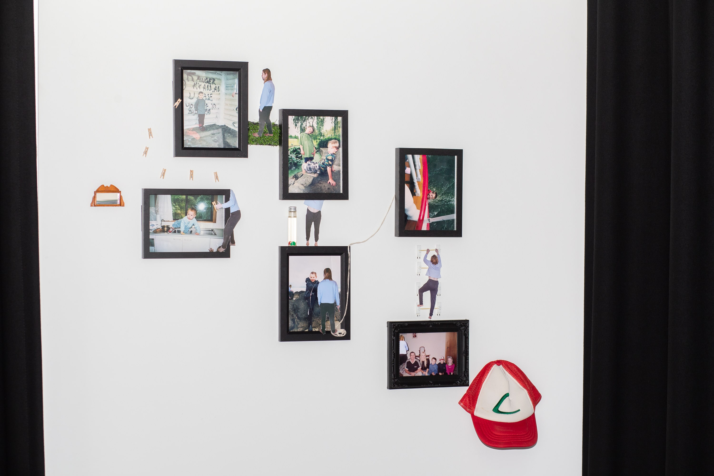

I Kinda Wish This Candy Wasn’t So Sour (2022)
Angus Gregurke
Digital Photomontage, Inkjet Prints, Various Materials from Hobby Shops, Mirror
What is a memory? What does it mean? Are they real? Can you remember the feelings?
Our perception of memory is often clouded and misrepresented, especially within family photos. Brainerd and Reyna explain in The science of false memory that ‘In its most general sense, false memory refers to the circumstances in which we are possessed of positive definite memories of events---although the degree of definiteness may vary--- that did not actually happen to us’.
This series is exploring how false memory can relate to the Family Photograph and the positive attributions often associated with the images. I have very little to no memory of these events in the photographs, I can’t remember the feelings, I can’t remember the scents, what else happened that day, anything that was said to me …except tiny fragments.

'I Kinda Wish This Candy Wasn’t So Sour', 2022 (Detail), Image Courtesy the Artist